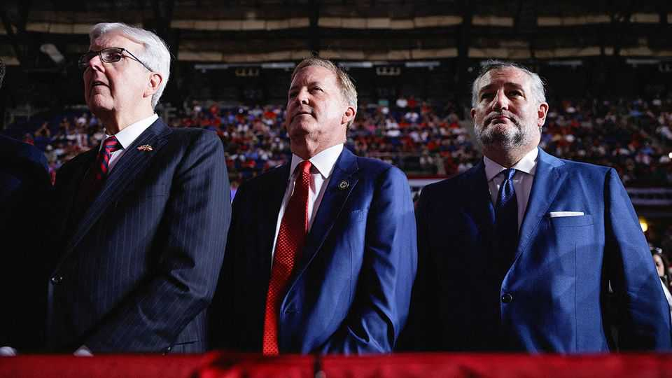

Republicans’ identity crisis in Texas
The old campaign messages aren’t working and the new ones are risky

Oct 22nd 2026
REPUBLICANS IN AMERICA’S biggest red state don’t usually have to play defence. But less than two weeks before election day, they are panicking. Ken Paxton, the scandal-plagued Senate candidate, is trailing James Talarico in the polls. Since early September, national Republicans have poured about $200m into ads in a bid to save his campaign—and their Senate majority. Greg Abbott, Texas’s three-term governor, has won past elections by double digits, but this year is being forced to fend off a Democratic challenger, Gina Hinojosa, outspending her six-to-one over the summer. “We’re worried about Texas,” Donald Trump admitted early this month.
Mr Paxton is a uniquely bad candidate, dogged by investigations and marital infidelity. But he is not Republicans’ only problem in Texas. Latinos in South Texas, who swung to Mr Trump in 2024, now appear to be drifting left; soccer moms in the suburbs of Dallas and Houston are tired of the president’s rancour. After more than two decades of unbroken rule, Texas Republicans are struggling to find a winning message—old campaign lines aren’t working and the party is trying to whip up the base by questioning if foreigners belong. Even if the party hangs on to power in Texas on November 3rd, its grip is loosening.
Like Republican candidates elsewhere, those in Texas are being dragged down by Mr Trump. The president’s statewide approval rating is -18, according to The Economist’s tracker. Mr Paxton told donors in September that Mr Trump’s midterm convention in Dallas sank his numbers, according to a leaked recording. Mr Abbott was conspicuously absent from a Trump rally in San Antonio on October 7th.
Texas’s political identity has long been secure enough to withstand a national leftward tilt. Now Republicans’ Lone Star arguments are losing force. For years, calls for border security united Texas Republicans and won over many independents. The party can now boast that the problem has been fixed—border encounters in August were 94% below the average month under Joe Biden. The issue is also less salient. For the first time in a decade, voters rank the cost of living above immigration as the “biggest issue facing the state”.
The ferocity of Washington’s deportation crackdown doesn’t help. “Stephen Miller and the guys calling shots in DC have taken immigration policy from being a net positive for Texas Republicans and made it neutral or negative,” says Bill Miller, a Republican lobbyist in the state. After a federal agent killed a man in Houston in July, Mr Paxton offered no condolences.
When the going gets tough, Texas Republicans tend to fall back on bragging about the “Texas miracle”, the economic boom unleashed by low taxes and light regulation. In the five years to 2025, at least 184 companies moved to Austin, Dallas and Houston. When Google announced a $40bn investment last November, Mr Abbott declared the state the “headquarter of headquarters” and promised to make it the “epicentre of AI development”.
Those words now haunt him. This year Texans, like Americans elsewhere, turned against data centres, forcing Mr Abbott to ask the legislature to repeal the tax breaks that helped lure them. Ms Hinojosa, his challenger, pounced on the hypocrisy. Campaigning in towns such as Amarillo and Granbury, where Democrats rarely win, she casts herself as a populist. “Greg Abbott is selling you out,” an ad reads. The governor’s other big policy priority, universal school vouchers, is also unpopular among Republicans in small towns, where public schools are a top employer.
“The classic arguments have run out of steam and a new order hasn’t been born yet,” says James Henson, an Austin pollster. To fill the void, some Republicans are testing a new message that they hope will resonate in November and beyond: “keeping Texas, Texas”. The meaning of that slogan has recently come into focus, as politicians wage war on foreign influences they say threaten Texas from within.
First it was Muslims. Last year Mr Abbott tried to block a mosque in Plano from building a community he dubbed “Sharia city” and designated America’s biggest Muslim civil-rights group a terrorist organisation. Mr Paxton tried, unsuccessfully, to bar Muslim schools from school vouchers. In the Republican primary Mr Paxton beat John Cornyn, the incumbent senator, with the help of an endorsement of Mr Trump and a new line of attack, with ads accusing Mr Cornyn of having a “special place in his heart for radical Islam”.
Then it was legal immigrants. In January, Mr Abbott froze H-1B visa applications at state agencies and universities. Four months later Mr Paxton opened investigations into 30 firms he accused of using “ghost offices” to allow “foreign nationals to invade Texas”. In September Bo French, a Republican running for railroad commissioner (a job that actually involves regulating oil and gas), posted a photo of students celebrating a University of Texas football victory on X—nearly all of whom had brown skin. “The problem is now obviously far worse than anyone imagined,” he wrote. Old-guard Republicans whom the party has ostracised, including Karl Rove and Mr Cornyn, called the post racist. Texas’s top brass didn’t condemn it.
The fight over who belongs in Texas is most heated in the suburbs. There, dizzying growth has transformed Republican strongholds into political battlegrounds that decide statewide elections. Between 2020 and 2025, the Dallas metro area grew faster than any other in America. The Muslim population grew with it, building cultural centres the size of Walmarts, and the share of people who identify as Hindu roughly tripled. In Frisco, a wealthy northern suburb where a quarter of residents are now Asian, city council meetings turned into political theatre. In public sessions this spring, speakers likened a proposed mosque to a Nazi recruitment centre and called Indians “job stealers”.
The effort fell flat. When a mayoral candidate in Frisco ran on the nativist message in June, he lost by 16 points. “The problems are manufactured in Frisco, and in a lot of other places too,” says Bill Woodard, a former city councillor. The fearmongering, he argues, jars with people’s positive experience of their neighbours. Burt Thakur, the council’s first Indian-American member and a former Trump voter, agrees. “It’s the consultant class doing what they do best,” he says, “which is cleave on during election times and try to figure out how to get out the vote.” Polls from the University of Texas show that social issues don’t resonate when petrol prices are high.
Mr Abbott is still expected to be re-elected and Mr Paxton may eke out a win, too—he is reviving a tactic that has worked for Republicans before, saying Mr Talarico, who once said “God is non-binary”, is for “they/them, not you”. But, as national Republicans search for a post-Trump direction, the bitterly fought campaigns in Texas offer a warning. “Texas is the design shop for the future of the party,” says Ross Hunt, a Republican strategist in Dallas. Some Texas Republicans seem to relish the divisive zeal that is Mr Trump’s speciality, but they haven’t convinced voters—beyond the 7% who vote in their primary—that they care about them and their problems. “If we can see that attitude get punished a little bit,” Mr Hunt says, “I don’t think anyone will shed a tear.”■
Stay on top of American politics with The US in brief, our daily newsletter with fast analysis of the most important political news, and Checks and Balance, a weekly note that examines the state of American democracy and the issues that matter to voters.